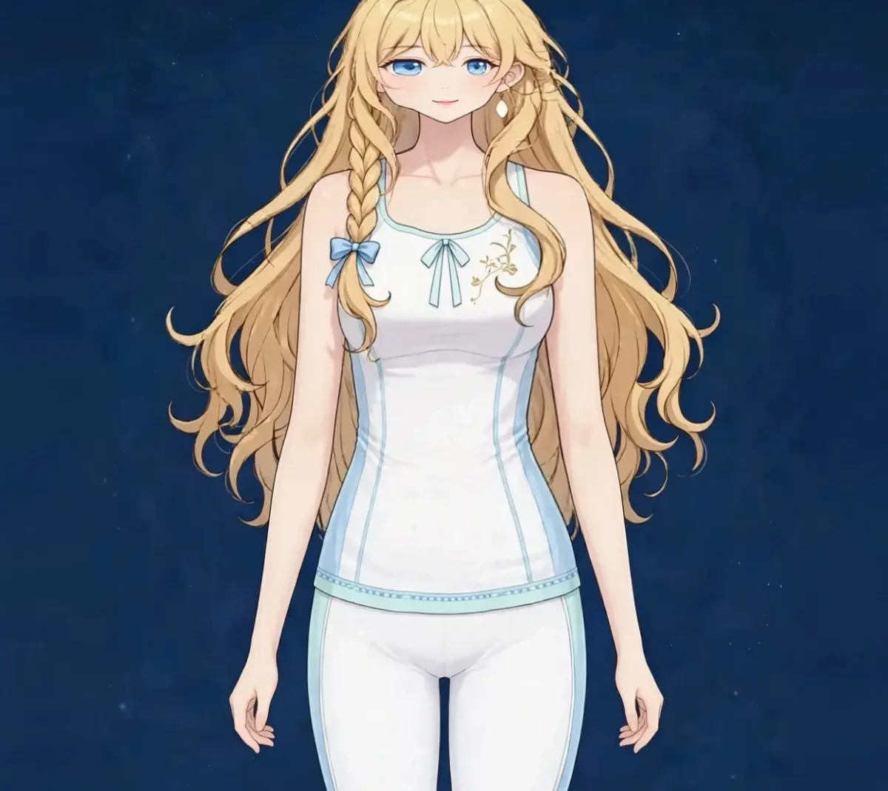
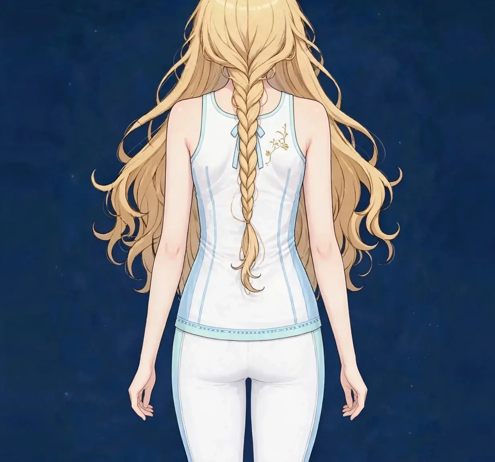

梅田でバストの形・位置ケア｜美容整体で姿勢とデコルテのラインにアプローチ｜ステラポラリス 梅田・女性専用美容・見た目
バストの位置が下がって見える、左右の位置が気になる、デコルテとのつながりがぼんやりしてきた——バストの悩みは、サイズよりも「位置と見え方」についての相談が多くあります。姿勢との関係から読み解いていきます。
バストの位置は姿勢で変わる
バストの見え方は、バストそのものだけでなく、それを支える土台である胸まわりの姿勢で変わります。猫背で胸が縮こんだ姿勢では、バストは下がって内側へ寄って見えます。反対に、胸が開いて背筋が伸びた姿勢では、同じバストでも位置が高く見えます。
特に巻き肩は、バストの位置の見え方に直結します。肩が内側へ入ると胸は閉じ、バストまわりのラインはもたつきます。このページで扱うのは、サイズの変化ではなく、姿勢を整えることで位置と見え方が整って見えるようアプローチする内容です。図1で、胸まわりと姿勢の関係を確認してみてください。
バストの位置の見え方は、下着を外した状態と着けた状態でも変わります。下着の支えに頼りきりではなく、姿勢という土台が整うことで、着けたときのラインも変わってきます。両方の視点を持つことが、現実的な見直しにつながります。
こんなサインはありませんか？ — バストの形・位置のチェックリスト
- バストの位置が下がって見える
- 猫背や巻き肩が気になる
- デコルテとの境目がぼんやりしてきた
- 下着の跡が脇や背中に残りやすい
- 胸を張る姿勢が疲れる
- 左右でバストの位置が違う気がする
- 肩や背中の張りも一緒に気になる
- 写真で上半身のラインが気になる
当てはまる項目が多いほど、姿勢や胸まわりの使い方に偏りが集まっている可能性があります。次の「要因」と見比べて、自分のパターンを確かめてみてください。
バストの位置が下がって見えやすい要因
- 猫背と巻き肩：背中が丸まり肩が内側へ入る姿勢では、胸は閉じてバストは下がって見えます。位置の見え方を決める、最も大きな姿勢の要因です。
- 胸まわりの筋肉の縮こまり：胸の前側の筋肉が縮こまると、肩は前へ引っ張られ続けます。開く力より閉じる力が勝っている状態です。
- 背中の支えの弱さ：胸を開いた姿勢を保つのは背中側の筋肉です。支えが弱いと、正した姿勢が続かず、胸は閉じに戻ります。
- 下着の合わなさ：サイズの合わない下着は、バストの位置を不自然に固定し、脇や背中のはみ出しにもつながります。施術とは別に、見直しの価値がある部分です。
- 年齢による変化：バストを支える組織や肌のハリは年齢とともに変わり、位置は下がりやすくなります。変化は自然なことですが、姿勢の見直しで見え方は変わります。
- 授乳などの経験：妊娠・授乳を経ると、バストの張りや形は変化します。時期に応じたケアと、姿勢の土台作りが大切です。
図1｜バストとデコルテの位置関係

東洋医学から見た考え方
東洋医学では、胸まわりには胃経や脾経、腎経などの経絡が通るとされ、デコルテの近くには肺経のツボも位置します。胸の張りや巡りは、全身の状態の表れとして見立てられることがあります。
バストまわりの見立てでは、胸を開くことと、背中側の支えのバランスを眺めます。施術では、胸の前側の縮こまりをほぐし、背中の張りとのバランスを整える進め方を取ります。バストそのものへの強い施術は行いません。
代表的なツボ
バストの位置・胸まわりのケアでよく挙げられるツボを紹介します。デリケートな部位のため、場所は胸の外側や上部にとどめ、やさしい圧で行ってください。
図2｜バストの位置で見たいポイント
おすすめ施術
美容整体・オイルマッサージ
施術では、バストそのものへの直接の施術ではなく、まず胸の前側の縮こまりと背中の張りをオイルマッサージでほぐし、胸が開きやすい状態を作ります。そのうえで美容整体で、巻き肩や姿勢の土台に触れながら、上半身全体のバランスを整えていきます。
デコルテのケアと組み合わせることで、首から胸までのラインを一続きで整えます。バストの位置が高く見えるようアプローチするには、胸を開く姿勢の土台作りが中心です。
施術の前後では、正面と横からの姿勢を鏡で見比べ、胸の開きと位置の見え方を一緒に確認します。下着の見直しについても、一般的な目安をお伝えできます。
自宅でできるセルフケア
バストの位置のセルフケアは「胸を開く・背中の支えを使う・下着を見直す」の組み合わせが基本です。痛みが出る場合は無理をせず中止してください。
- 1．胸を開くストレッチ手を後ろで組み、肩甲骨を寄せながら胸を張って30秒キープ。縮こまった胸の前側を伸ばす基本の動きです。
- 2．肩甲骨寄せ椅子に座って両肘を後ろへ引き、肩甲骨を寄せて5秒キープを5回。姿勢を保つ背中側の支えを使う練習です。
- 3．壁を使った姿勢チェック壁に背中をつけて立ち、胸の開きと肩の位置を確認します。毎日の短いチェックが、姿勢のクセへの気づきを育てます。
- 4．下着のフィッティング見直しサイズが合っているか、脇や背中に跡が残りすぎていないかを確認します。専門店での計測も、見直しの良い機会です。
図3｜背中側の支え

場面別の注意
胸元の開いた服の日
デコルテやバストのラインが気になる服の日は、出かける前に胸を開くストレッチを。姿勢の意識だけでも見え方は変わります。
デスクワークの日
前かがみの姿勢が続く日は、胸の縮こまりが固定されやすくなります。1時間に一度は胸を開くリセットを挟んでください。
ブライダルや写真の予定の前
ドレスでは胸まわりのラインが見えます。早めに姿勢の土台から整える計画を立てることがおすすめです。ブライダルのページもあわせてご覧ください。
受診の目安
次のような場合は、サロンでのケアの前に医療機関への受診をおすすめします。
- 胸や脇にしこりや腫れがある
- 乳頭からの分泌など、いつもと違う変化がある
- 胸の痛みが続いている
- 皮膚のただれや炎症がある
- 発熱を伴う胸の張りや痛みがある
当店は医療機関ではなく、診断は行いません。迷うときは、まずかかりつけの医療機関にご相談ください。
よくある質問
Q．バストアップできますか？
当店のケアは、サイズを大きくするものではありません。姿勢を整えることで、バストの位置が高く見え、ラインが整って見えるようアプローチする内容です。この点をご理解のうえご利用ください。
Q．直接触れる施術ですか？
バストそのものへの直接の施術は行いません。胸の前側の筋肉や背中、デコルテといった周辺をケアし、姿勢の土台から整える進め方です。タオル掛けを徹底していますのでご安心ください。
Q．巻き肩も一緒に相談できますか？
はい。巻き肩はバストの位置の見え方に直結します。関連ページの巻き肩もあわせてご覧ください。当日は姿勢全体を確認して組み立てます。
Q．下着の相談もできますか？
専門のフィッティングではありませんが、跡の残り方や姿勢の状態から、一般的な見直しのポイントをお伝えできます。計測は下着専門店の利用がおすすめです。
関連するお悩みページ
関連する経絡ページ
ご予約
ステラポラリス（大阪・梅田／女性専用）｜美容整体・オイルマッサージ 90分 10,000円｜月〜土 17:00〜22:00・完全予約制
ご予約はLINE公式アカウントで受け付けています。希望の日時と、気になる場所を送ってください。